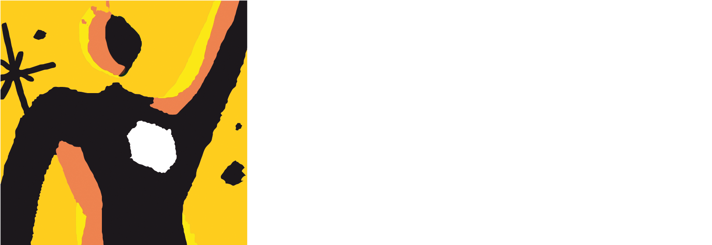
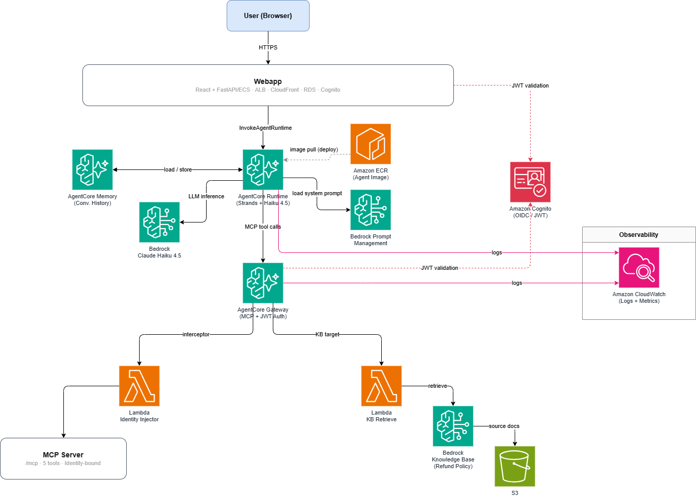
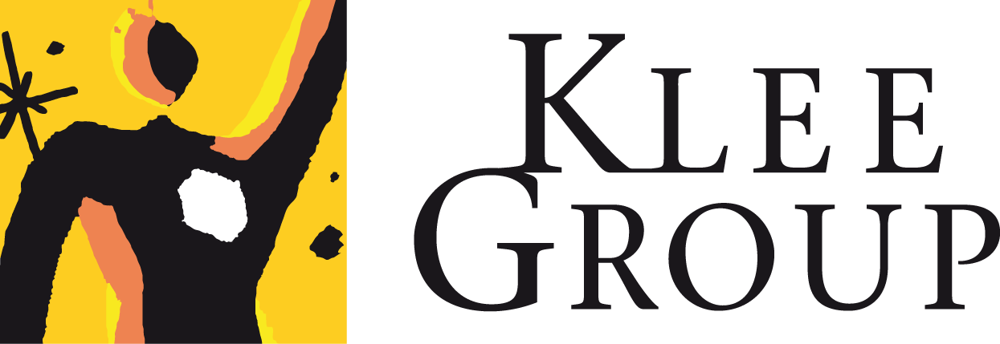

EBG · 25 juin 2026
Choisir ses technologies d'agents
Une grille de décision, pas un catalogue d'outils.
Jonathan Gross · Ingénieur Senior Data & AI — Maxime Lamborelle · Consultant Senior Data & AI
25 juin 2026Klee Group
Klee Group : Conseil & Déploiement
La puissance de l'AI, l'expertise de Klee Group : dopez vos services numériques métier, sans compromis sur la qualité et la sécurité.
Conseil & Solutions
Conseil en Transformation
- Stratégie & cadrage de la transformation
- Conduite du changement & UX/UI
- Innovation & design de service
Développement applicatif
- Solutions sur mesure, évolutives & sécurisées
- Modèles spécifiques, hybride ou low code
- Plateforme modulaire & interopérable
FP&A, Conso & ESG
- Pilotage de la performance financière
- Clôture, consolidation & reporting
- Plateformes (OneStream) & ESG
Solutions Atlassian, EasyVista
- Partenaire Platinum Atlassian
- Collaboration, agilité & efficacité
- Environnements de travail hybrides
AI & Data
- Gouvernance & compliance et valorisation des données
- IA générative, prédictive & agentique
- AI & Data platforms
Agence digitale
- Expériences utilisateurs fluides & sans couture
- Parcours omnicanaux hyper personnalisés
- Engagement & fidélisation
Centre d'excellence
Cybersécurité
- Sensibilisation, audit technique & Security by Design
DevSecOps
- Automatisation, supervision & sécurité intégrées
Cloud
- Adoption, migration & exploitation, FinOps & GreenOps
Une approche globale, un ancrage métier fort · de l'idée à la solution opérationnelle, durable & industrielle
Klee Group : Focus sur offre AI & DATA :4 piliers, 2 dimensions transverses.
Conseil – Stratégie AI & Data
Cadrage stratégique, business case, roadmap de transformation - approche pragmatique & agnostique
Gouvernance Data & AI
- Data & AI Compliance (RGPD, KYC, IA Act, Agec, PPD, …)
- Data & AI Governance, Observability
- Data Catalog & Lineage
- CDO Dashboard & Data Governance opérationnelle
- Politiques & éthique, Sécurité et conformité
Architecture AI & Data
- Stacks data modernes, Data Platform
- Data Management & Data Quality
- Plateformes Agentique, AI RAG et ML
- Master Data Architecture
- Infrastructure Cloud
- Standards et bonnes pratiques
Build & Run
- Développer, tester, déployer et opérer des plateformes data modernes & Plateformes AI industrialisées
- Master Data Repository (Customer, Supplier Product, Asset, Location, Employés, …)
- Product Information Management project
IA ML, Générative et Agentique
- Roadmap Data & AI
- Transformation AI & Adoption
- DataScience and ML accelerator (Scoring and valeur Client, Fraude, Risque, …)
- Gouvernance & structuration des corpus documentaire AI RAG
Conduite du changement
Acculturation, montée en compétences, évolution culturelle · alignement & adoption durable
La question posée
« Choisir ses technologies d'agents »
Frameworks open-source
LangGraph · CrewAI · AutoGen — frameworks de développement d'agents (comportement, prompts, tools…)
C'est pareil
Code vs Low-code/No-code
Pas important
Frameworks des clouds
Bedrock Agents · Vertex Agent Builder · Foundry Agent Service
C'est pareil
Frameworks SaaS métier
Agentforce (Salesforce) — agents collés aux données de l'éditeur
Parfait si répond au besoin, sur vos données
Type de modèle & localisation
API propriétaire → API sur AWS/Azure/GCP → Modèle sur vos VM (sur AWS/Azure/GCP) → Modèle open-source en local
Demandez à votre RSSI
Notre angle
Ces choix technologiques ne sont pas si compliqués.
Le vrai chantier
Implémenter son premier agent
1
Définir et cadrer le use case
Audience · intégrations · gouvernance · tests · ...
2
Choisir la techno & l'archi
non bloquant
3
Construire
4
Évaluer
Jeux de tests · métriques · non-régression · red-teaming
5
Exploiter
Observabilité · maîtrise des coûts · itération en production
Notre angle
Les choix techno, c'est 1 étape sur 5 — ne restez pas bloqués dessus. Ce qui va faire réussir (ou échouer) un agent, c'est tout le reste.
La méthode
Bien choisir sa techno d'agent — en 3 réflexes
① Situez le use case sur l'échelle d'autonomie.
Le niveau d'autonomie visé commande tout le reste.
② Bâtissez un socle agentique réutilisable.
Un même socle — runtime, mémoire, identité, gateway, garde-fous, observabilité — accueille tous vos use cases, à tous les échelons.
③ Repérez où se loge vraiment le lock-in.
Le modèle et le framework se changent ; le runtime, lui, vous engage. Choisissez-le en conscience.
Le socle reste le même ; c'est le niveau d'autonomie du use case qui dimensionne ce qu'on pose dessus.
La colonne vertébrale
L'échelle d'autonomie — illustrée par Léa, au Service Client
1
Chatbot sécurisé
résume, reformule, rédige (texte fourni)
« Résume ce mail de réclamation, corrige mon brouillon de réponse » — sur le texte fourni, le conseiller envoie
GenAI · humain
2
Copilot d'entreprise
ancré sur les données internes
Résume l'historique du client + la politique et rédige la réponse personnalisée
GenAI · humain
3
Agent borné
accomplit une tâche dans des limites fixées
Traite le remboursement < seuil, escalade au-dessus, refuse la fraude
Agentique · supervisé
4
Agent end-to-end
mène une tâche de bout en bout, sous supervision
Gère la réclamation de bout en bout : remboursement + relivraison + notif
Agentique · supervisé
5
Système multi-agents
plusieurs agents s'orchestrent à travers les domaines
Un superviseur orchestre service + logistique + anti-fraude + compta
Agentique · gouverné
Le même besoin de Léa gravit l'échelle — plus d'autonomie = plus de valeur ET plus de risque à gouverner.
L'architecture qui se déforme
Une seule archi — les boîtes s'allument selon l'échelon
allumée
gouvernance renforcée
éteinte
le socle partagé sert tous les use cases
L'autonomie ne se paie pas en briques techniques — elle se paie en gouvernance.
La stack démystifiée
3 couches — un lock-in différent par couche
Modèlele cerveau
Claude · GPT · Gemini / Llama · Mistral · Qwen — interchangeable via une abstraction API (LLM gateway ·
LiteLLM)SWAPPABLE
Frameworkoù l'on code la logique
LangGraph/… — il y en a beaucoup : neutres (CrewAI · Pydantic AI) ou alignés cloud (AWS Strands · Google ADK · MS Agent Framework). Le choix importe peu, il dépend surtout du cloud.LE PLUS MINCE
Runtimehéberge · sécurise · observe
AWS Bedrock AgentCore — mémoire, identité, gateway/MCP, observabilité. Le vrai lock-in est ici : ces couches stateful managées ne se déménagent pas d'un clic.ALIGNER S/ CLOUD
Ne stressez pas sur le choix du cloud. Bedrock AgentCore ≈ Microsoft Foundry Agent Service ≈ Google Agent Runtime (Gemini Enterprise, ex-Vertex) : même socle, agnostiques au modèle et au framework. On illustre avec AWS — la méthode ne change pas.
Code vs Low-code/No-code
Code
▶
No-codeZapier · Power Automate · n8n
▶
Codepour les LLMs

Le no-code a donné un peu de pouvoir au business.
Les LLM donnent le pouvoir du code à tout le monde.
Les LLM donnent le pouvoir du code à tout le monde.
Word / PowerPoint
▶
Markdown (+ HTML)

Exemple avec un use case
L'agent de remboursement de Léa
Le besoin
Un client réclame sur une commande (plat froid, article manquant, retard) : l'agent identifie la clause de la politique, calcule le geste, l'applique ou escalade.
La contrainte
Ça traverse plusieurs systèmes (commandes, paiement, mail). Argent réel, clients authentifiés, tentatives de manipulation. La politique fait foi, pas le LLM.
Ce qu'on attend
Autonomie bornée : l'agent rembourse sous le seuil (≤ 25 €, ≤ 2 remb./30 j), escalade au-dessus, refuse la fraude.
Échelle : niveau 3–4Le résultat concret · illustré sur AWS
La même maquette d'archi — figée sur le cas de Léa, sur AWS
L'archi de l'agent de remboursement
gouvernance renforcée — identité · garde-fous · observabilité
Sous le capot · l'archi réelle du cas de démo
L'architecture AWS de RestoAgent — l'implémentation derrière la démo

Les mêmes briques que la maquette, en services AWS réels : AgentCore Runtime (Strands + Claude Haiku 4.5) · Gateway MCP + JWT · Cognito (identité) · AgentCore Memory · Bedrock Knowledge Base (policy de remboursement) + S3 · CloudWatch (observabilité). Outils exposés via un MCP Server (5 tools, identity-bound).
Et voici cette archi en action (niveau 3–4)
▶ Démo — RestoAgent, l'agent de remboursement service client
Souveraineté & confidentialité — « si la donnée ne doit pas sortir d'Europe »
Où tournent les agents et les données ?
Vérité 1« Région EU » ≠ souverain. Le CLOUD Act contraint un fournisseur US quelle que soit la localisation des données.
Vérité 2Pas qu'une affaire de modèle. L'agent touche la donnée par ses outils, sa mémoire et son observabilité (piège : traces vers un SaaS US).
1
Hyperscaler région EU
résidence RGPD — mais juridiction US demeure
2
Cloud souverain
AWS Eur. Sovereign Cloud · S3NS — juridiction + résidence
3
Fournisseur EU (Mistral, OVH,…)
stack 100 % EU — modèles frontière un cran derrière
4
VPC privé + modèles open-weight
la donnée ne sort jamais — vous opérez l'inférence
5
On-prem / air-gapped
contrôle max — GPT/Claude/Gemini impossibles
Réponse pragmatique : l'hybride par classe de données. Non sensible → meilleure API frontière ; confidentiel → open-weight local ; un AI gateway route selon la sensibilité.
À emporter
3 réflexes pour choisir sa techno d'agents
PLACER
le use case sur l'échelle (1→5). L'échelon décide tout le reste.
MUTUALISER
un seul socle agentique pour tous vos use cases.runtime · mémoire · identité · gateway · garde-fous · observabilité — bâti une fois, réutilisé à tous les échelons
COMMENCER
bas, gouverner d'abord, monter délibérément.
Merci.
Jonathan Grossjonathan.gross@kleegroup.com
Maxime Lamborellemaxime.lamborelle@kleegroup.com
Présentation & outil à télécharger : github.com/woodyjon/klee-agentic
Klee Group · EBG, 25 juin 2026
EBG · 25 juin 2026Klee Group
